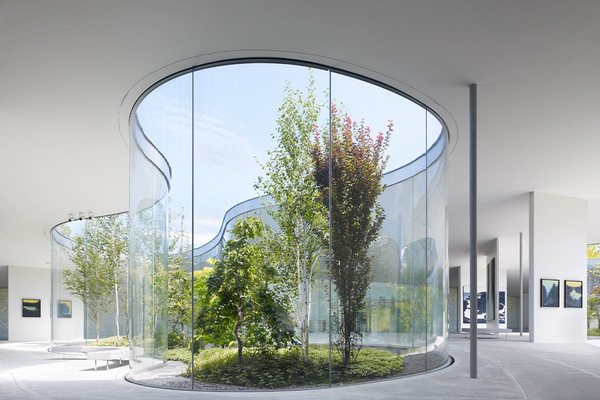
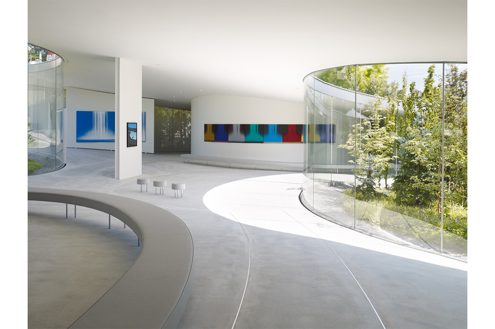
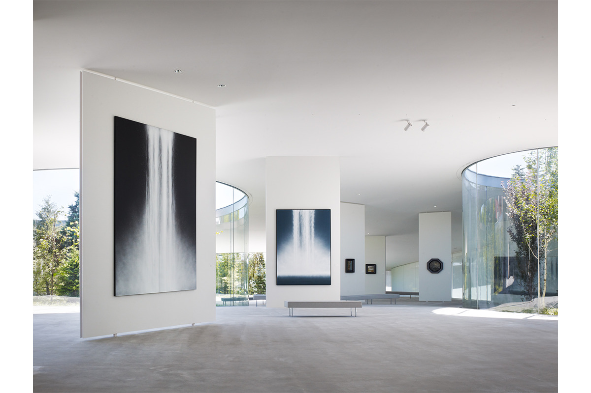
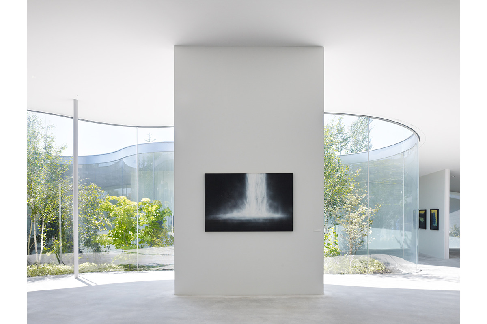
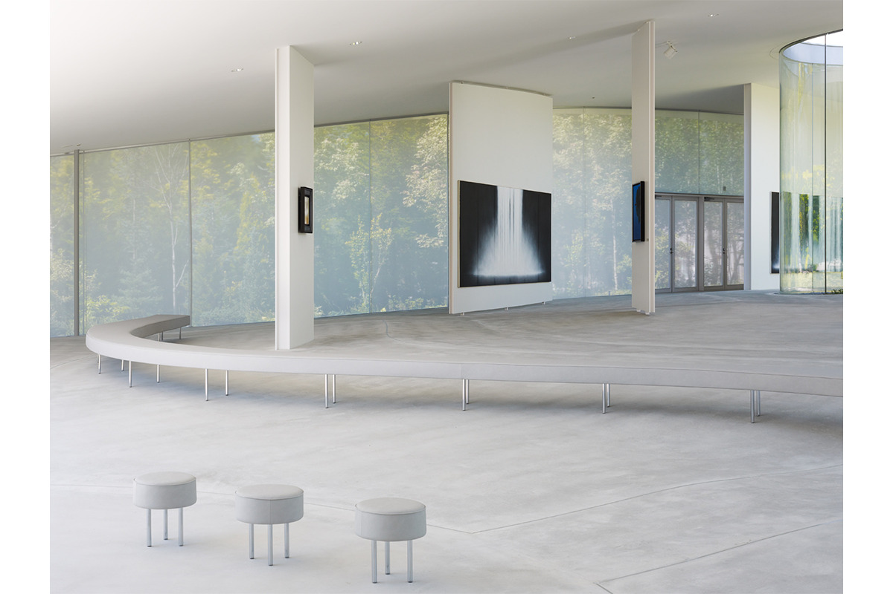
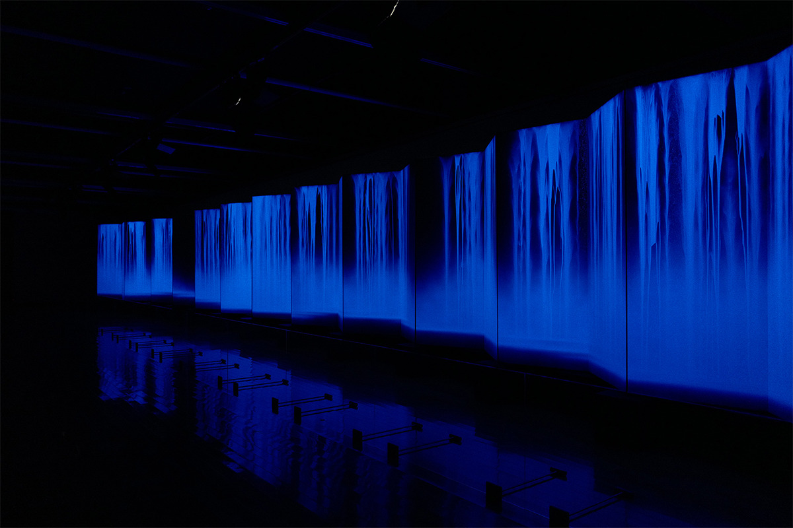
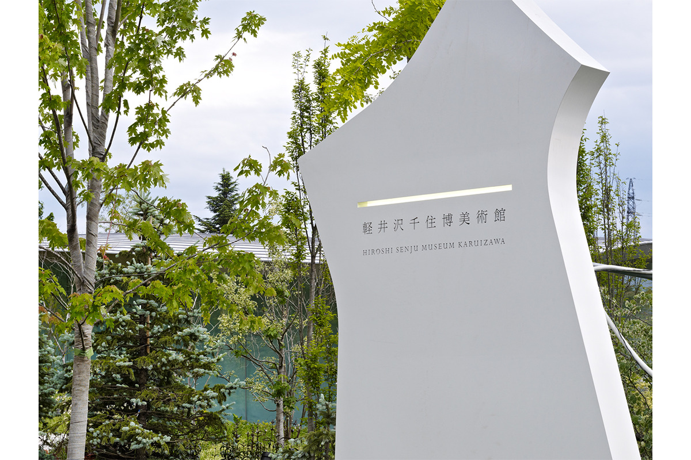

Префектура Нагано · Каруидзава · искусство и архитектура
Hiroshi Senju Museum Karuizawa: водопады Хироси Сэндзю в стеклянном здании Рюэ Нисидзавы

В Каруидзаве есть музей, где картины висят посреди леса. Его построили для работ Хироси Сэндзю, японского художника с мировым именем, а здание спроектировал Рюэ Нисидзава, лауреат Притцкеровской премии.
Музей
Светлый дом для одного художника
Hiroshi Senju Museum Karuizawa показывает работы Хироси Сэндзю от ранних до поздних. Художник живёт в Нью-Йорке и работает в Токио, Киото и Нью-Йорке. Он пишет в технике нихонга, традиционной японской живописи, и первым из азиатских художников получил почётную премию в живописном разделе Венецианской биеннале.
В собрании музея около 100 работ, написанных с 1978 по 2011 год, и примерно половина из них выставлена в залах. Экспозицию меняют раз или два в год, но две вещи остаются на месте всегда: «Водопад», самая известная серия художника, и оригиналы иллюстраций к его детской книжке о ночи звездопада. Кроме постоянной экспозиции, здесь проходят выставки работ Сэндзю и тематические выставки.

Архитектура
Один зал на склоне
Здание спроектировал Рюэ Нисидзава. Вместе с Кадзуё Сэдзимой он ведёт бюро SANAA, и в 2010 году они получили Притцкеровскую премию, которую называют Нобелевской премией архитектуры. Художник попросил сделать музей «светлым, открытым и непохожим на те, что были раньше». Нисидзава построил пространство, где можно войти в мир картин Сэндзю, а заодно собраться вместе, отдохнуть или просто побыть наедине с собой.
К входу ведёт сад цветной листвы, который окружает музей со всех сторон: деревья и травы в нём меняют цвет от сезона к сезону. Стоит открыть дверь, и перед вами просторный зал, а прямо напротив входа гостя встречает «Водопад».


Нисидзава не стал выравнивать участок: здание повторяет естественный рельеф, и пол постепенно спускается, как склон холма. Стены здесь сами из стекла, поэтому и внутри видны пейзажи Каруидзавы, зелень и дневной свет, а природа и живопись оказываются рядом. Стекло обработано так, что не пропускает ультрафиолет. Кружевные шторы, которые защищают от жары, полупрозрачны: сквозь них видно улицу, и они тоже берегут картины от солнца.

В зале есть четыре стеклянных двора разного размера. В них посажены деревья и травы с цветной листвой, и смотреть на них изнутри можно так же, как на картины.
The Fall Room
Единственный закрытый зал музея называется The Fall Room, и атмосфера в нём совсем другая. В 2022 году здесь висела работа «Бог-дракон I, II» длиной больше 23 метров. Её освещали по очереди обычным светом и ультрафиолетовой лампой.

Кафе и магазин
Пекарня рядом с музеем
Рядом с музеем стоит отдельное здание с кафе и музейным магазином. Его спроектировало другое архитектурное бюро, и в отличие от округлого музея здесь всё построено на прямых линиях, причём довольно смелых. В магазине продают сувениры с работами Хироси Сэндзю. В кафе работает Boulangerie Asanoya, старая пекарня Каруидзавы, где пекут хлеб из простых, но хороших продуктов.

Сад, стекло и живопись Сэндзю здесь работают как одно целое, а после осмотра можно выпить кофе и съесть хлеба в соседней пекарне.
Hiroshi Senju Museum Karuizawa
- Адрес
- префектура Нагано, уезд Китасаку, Каруидзава, Нагакура, 815
- Телефон
- +81 267-46-6565
- Часы работы
- 9:30–17:00
- Выходные
- вторник (в праздники, на Золотой неделе и в июле–сентябре без выходных), зимний перерыв с 26 декабря до конца февраля
- Цены / Вход
- взрослые 1500 иен, студенты 1000 иен, школьники до средней школы включительно и люди с инвалидностью бесплатно, есть групповые тарифы
- Сайт
- senju-museum.jp
Фото: Даити Ано.